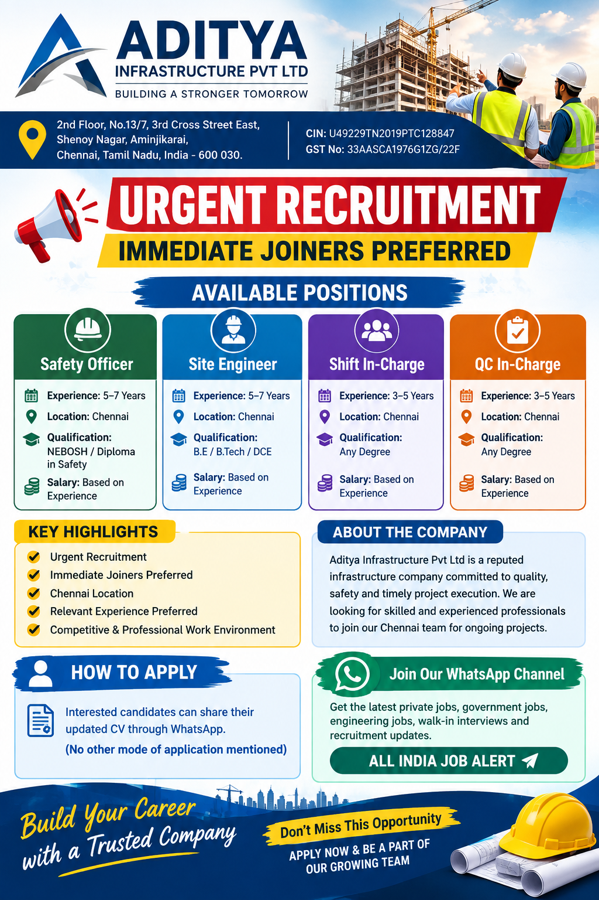

Immediate Joiners Preferred – Aditya Infrastructure Pvt Ltd
📍 Job Location: Chennai
📢 Join All India Job Alert WhatsApp Channel
Get the latest private jobs, urgent recruitment, engineering vacancies, walk-in interviews and job updates directly on WhatsApp.
Join WhatsApp ChannelAditya Infrastructure Pvt Ltd Recruitment 2026
Aditya Infrastructure Pvt Ltd has announced an urgent recruitment drive for experienced professionals in Chennai, Tamil Nadu. The company is looking for suitable candidates for four different positions including Safety Officer, Site Engineer, Shift In-Charge and QC In-Charge. Candidates with relevant experience are preferred, while immediate joiners are specifically encouraged to apply.
This recruitment opportunity is suitable for professionals who have experience in infrastructure, construction, site operations, safety, quality control and project-related activities. The vacancies require different levels of experience depending on the position. Candidates should carefully check the required qualification and experience before sending their CV.
The advertised job location for all the vacancies is Chennai, Tamil Nadu. The salary has been mentioned as “Based on Experience”, which means the company has not specified a fixed salary amount in the recruitment information. Candidates should discuss salary, benefits, job duties and other employment terms directly with the recruitment team.
Aditya Infrastructure Pvt Ltd – Company Details
Aditya Infrastructure Pvt Ltd
Chennai, Tamil Nadu
Urgent Recruitment
Immediate Joiners Preferred
Based on Experience
Preferred
Company Address
Aditya Infrastructure Pvt Ltd
2nd Floor, No.13/7, 3rd Cross Street East,
Shenoy Nagar, Aminjikarai,
Chennai, Tamil Nadu, India – 600 030.
CIN:
U49229TN2019PTC128847
GST No:
33AASCA1976G1ZG/22F
Aditya Infrastructure Vacancy Details
| Position | Experience | Location | Qualification | Salary |
|---|---|---|---|---|
| Safety Officer | 5–7 Years | Chennai | NEBOSH / Diploma in Safety | Based on Experience |
| Site Engineer | 5–7 Years | Chennai | B.E / B.Tech / DCE | Based on Experience |
| Shift In-Charge | 3–5 Years | Chennai | Any Degree | Based on Experience |
| QC In-Charge | 3–5 Years | Chennai | Any Degree | Based on Experience |
1. Safety Officer – Chennai
Aditya Infrastructure Pvt Ltd is hiring experienced Safety Officers for its Chennai location. Candidates should have 5 to 7 years of relevant experience and possess either NEBOSH or a Diploma in Safety qualification.
The position is suitable for safety professionals who have practical experience in construction, infrastructure or project environments. Candidates should be familiar with workplace safety procedures, site monitoring, safety coordination and maintaining a safe working environment.
Applicants should clearly mention their safety qualification, total experience and previous project responsibilities in their updated CV. Candidates with relevant experience and immediate joining availability are encouraged to apply.
2. Site Engineer – Chennai
The Site Engineer vacancy requires 5 to 7 years of experience. Candidates should have B.E, B.Tech or DCE qualification. The position is based in Chennai and is suitable for engineering professionals with practical site and project experience.
Candidates should mention their previous projects, site responsibilities, technical skills, total experience and current designation in their CV. Applicants with infrastructure or construction experience can consider this opportunity.
Immediate joiners are preferred according to the recruitment information. Candidates should clearly mention their joining availability while contacting the recruitment team.
3. Shift In-Charge – Chennai
The Shift In-Charge position requires 3 to 5 years of experience. Any Degree is mentioned as the qualification. The role can be suitable for professionals who have experience handling shifts, coordinating manpower and monitoring daily operational or site activities.
Candidates should have good coordination and communication skills. Applicants should clearly describe their previous shift-management, team-coordination and operational responsibilities in their updated CV. Relevant infrastructure or construction experience can be an advantage.
4. QC In-Charge – Chennai
Aditya Infrastructure Pvt Ltd is also recruiting QC In-Charge candidates with 3 to 5 years of experience. Any Degree is mentioned as the required qualification for this position.
Candidates with relevant quality-control experience can apply. Applicants should mention their previous quality-related responsibilities, project experience, inspections and coordination work in their CV.
Professionals with practical experience in quality control and construction or infrastructure projects can consider this vacancy. The job location is Chennai.
Who Can Apply?
The recruitment is mainly intended for experienced professionals. Applicants should check the experience and qualification requirements before applying for a particular position.
- Safety Officers with NEBOSH or Diploma in Safety and 5–7 years of experience.
- Site Engineers with B.E, B.Tech or DCE and 5–7 years of experience.
- Graduates with 3–5 years of relevant experience for Shift In-Charge.
- Graduates with 3–5 years of relevant QC experience for QC In-Charge.
- Candidates with relevant infrastructure or construction experience are preferred.
- Immediate joiners are preferred.
Salary Details
The recruitment information does not mention a fixed salary amount. Salary for all four positions is stated as Based on Experience. The final salary may depend on the candidate’s experience, qualification, skills and the position offered.
Candidates should discuss the complete salary structure, benefits, working conditions, job responsibilities and other employment terms directly with the recruitment team before accepting an offer.
Job Location – Chennai
All the vacancies mentioned in this recruitment drive are for Chennai, Tamil Nadu. Candidates who are willing to work in Chennai and meet the required experience and qualification can apply.
Candidates should confirm the exact project or site location and reporting details with the recruiter before joining.
How to Apply for Aditya Infrastructure Jobs 2026
Interested and eligible candidates can apply by sharing their updated CV through WhatsApp with the recruitment contact.
📱 WhatsApp / Contact:
+91 95973 65477
Company:
Aditya Infrastructure Pvt Ltd
Job Location:
Chennai, Tamil Nadu
Candidates should send an updated CV containing their full name, mobile number, current location, total experience, educational qualification, current designation and previous company details. The CV should clearly mention the position for which the candidate is applying.
Safety Officer candidates should mention NEBOSH or Diploma in Safety qualification and relevant safety experience. Site Engineer candidates should mention B.E, B.Tech or DCE qualification along with site and project experience. Shift In-Charge and QC In-Charge candidates should clearly mention their relevant operational or quality-control experience.
Candidates who are immediate joiners should mention their availability in the CV or WhatsApp message.
Documents and Information to Keep Ready
Before contacting the recruitment team, candidates should keep an updated CV ready. It is recommended to provide accurate information about experience and qualifications.
- Updated Resume / CV
- Educational qualification details
- Relevant experience details
- Professional certificates, where applicable
- Current location
- Current and previous designation
- Current company details
- Notice period / Immediate joining availability
Importance of Relevant Experience
These vacancies are specifically intended for experienced professionals. Candidates should apply for the position that best matches their actual experience and qualification.
A Safety Officer should highlight site safety experience and safety qualifications. A Site Engineer should mention project execution and site responsibilities. Shift In-Charge candidates should explain shift-management and coordination experience, while QC In-Charge candidates should describe quality-control responsibilities and project exposure.
A properly prepared CV can help the recruitment team understand the candidate’s profile quickly. Candidates should avoid sending incomplete or unclear CVs.
How to Prepare Before Applying
Candidates should review their previous work experience and be prepared to explain their responsibilities clearly. Applicants may be asked about their previous projects, technical skills, current designation, total experience, joining availability and expected responsibilities.
Safety professionals should revise important safety procedures and practical site-safety responsibilities. Site Engineers should be ready to discuss their project and site experience. Shift In-Charge candidates should be able to explain shift operations and team coordination, while QC professionals should be prepared to discuss quality-control activities.
📲 Get More Private Job Updates
Join All India Job Alert on WhatsApp for Chennai jobs, engineering vacancies, urgent recruitment, private company jobs, walk-in interviews and latest employment updates.
Join All India Job AlertImportant Notice for Job Seekers
This recruitment post has been prepared from the vacancy information provided for Aditya Infrastructure Pvt Ltd. Candidates should confirm the latest vacancy status, salary, selection process, joining date, project/site location and employment terms directly with the recruitment contact before making travel or joining arrangements.
Job seekers should never pay money to anyone in exchange for a job, interview or selection. Verify recruitment communications before sharing sensitive personal documents or making any payment.
Aditya Infrastructure Recruitment 2026 – Quick Summary
| Company | Aditya Infrastructure Pvt Ltd |
|---|---|
| Vacancies | Safety Officer, Site Engineer, Shift In-Charge, QC In-Charge |
| Location | Chennai, Tamil Nadu |
| Experience | 3–7 Years depending on position |
| Qualification | NEBOSH / Diploma in Safety / B.E / B.Tech / DCE / Any Degree |
| Salary | Based on Experience |
| Joining | Immediate Joiners Preferred |
| Contact | +91 95973 65477 |